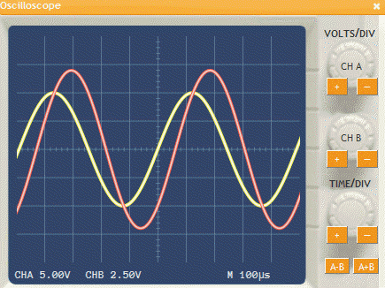
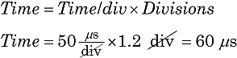
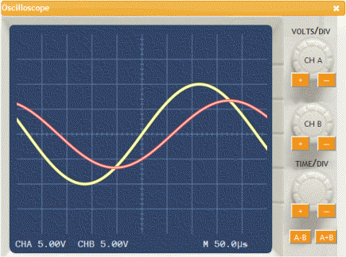
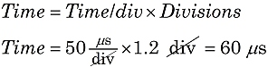
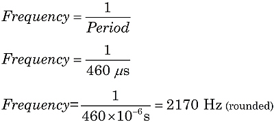

Measuring Time and Frequency
|  |
|
Figure 1. Adjusting time/div |
The voltage in AC circuits oscillates at a rate known as the frequency. With an oscilloscope, you can see and measure the length of time between signals, and calculate the frequency of an AC signal.
Adjust the oscilloscope display
Anytime you use an oscilloscope, you must first adjust the vertical and horizontal display. As discussed in another tutorial, Use volts/div and time/div knobs to adjust the horizontal scale so one whole cycle fits in the screen. See Figure 1. After adjusting, notice the time per division setting on the display.
Measure a time span
Just as you use the volts/div setting to find amplitude, you can use the time/div setting to calculate a time span. For example, in Figure 1 we see the Channel B signal (red) lags the Channel A signal (yellow) by 1.2 divisions. With the time/div setting of 50 μs/div, we can calculate the length of this delay:

Measure the wave period
|  |
|
Figure 2. Counting time divisions |
Just as you measured a small time difference, you can also measure the period: the time for one complete wave cycle. Sometimes you can count the divisions more easily by adjusting the horizontal position of the wave. In Figure 2, we see the Channel A signal repeats after 9.2 divisions. As before, we can use the time/div setting of 50 μs/div to calculate this length of time:

Calculate the frequency
Knowing the wave period, it is a simple calculation to find the wave frequency. Hint: Use scientific notation in your calculator.

This should compare well with the approximate frequency indicated by the function generator.
Here are some examples of common metric prefixes you will encounter:
1 μs = 10−6 s 1 ms = 10−3 s 1000 Hz = 1 kHz 106 Hz = 1 MHz